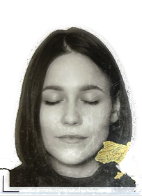
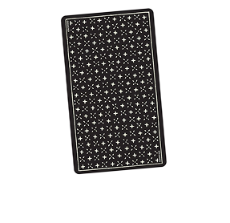
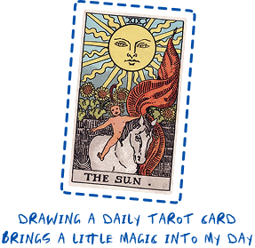
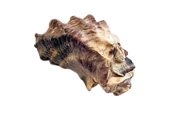
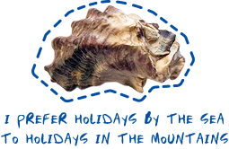
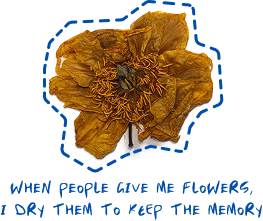
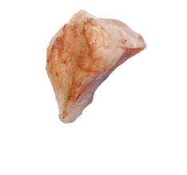
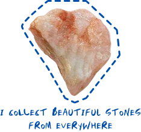
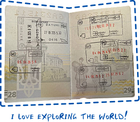
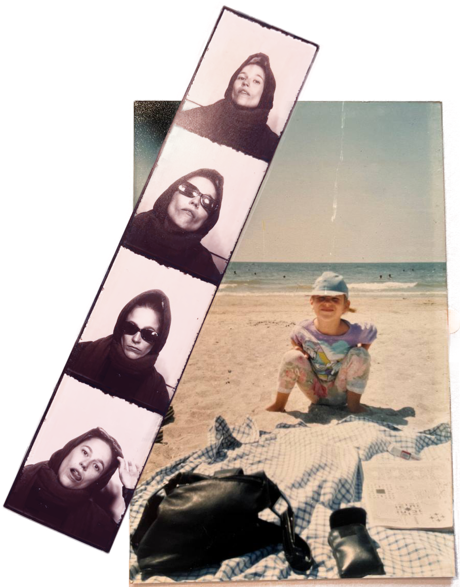

I started my adult life in front of a classroom, teaching English as a second language for eight years. Language was my first design material — I learned early that how you communicate shapes how people feel, connect, and understand the world around them. That instinct eventually led me to visual design, where I found a new language: one made of space, color, type, and motion.
Today I work at the intersection of UI/UX, graphic design, and branding — crafting experiences that are as thoughtful as they are beautiful. I’m drawn to the story a brand tells before it says a single word, and I’m deepening my practice in brand identity and visual systems.
My home is Ukraine, but also Moldova, and the world has been my classroom ever since. Each place has taught me something about light, texture, people, and pace. Thailand especially left a mark: I spent time in a monastery there, which brought a quietness into how I see and make things.
When I’m not designing, I’m on the mat practicing ashtanga yoga, painting, or out in the streets with a camera. Documentary photography has become one of my deepest joys — I’m drawn to the unposed, the unglamorous, the real. Next, I want to bring that eye to film. Documentary filmmaking feels like the natural next step for someone who has always been fascinated by how stories are told.
Thank you for being here. If you’d like to work together or just say hello, don’t hesitate to reach out. I’d love to hear from you.